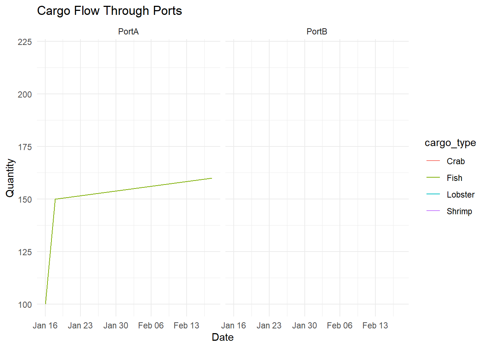
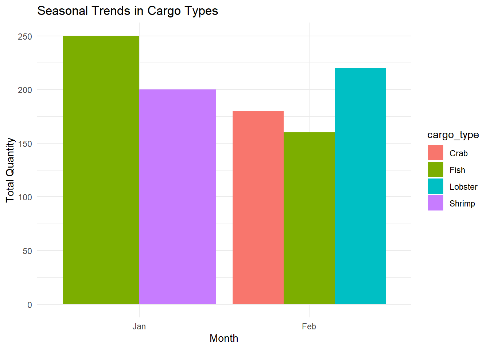

pacman::p_load(jsonlite, tidygraph, ggraph, visNetwork, graphlayouts, ggforce, skimr, tidytext, tidyverse)Take Home Ex 3
1. Overview
In Oceanus, island life is defined by the coming and going of seafaring vessels, many of which are operated by commercial fishing companies. Typically, the movement of ships and goods are a sign of Oceanus’s healthy economy, especially in the fishing business. But mundane routines can be disrupted by a major event. Analysts at FishEye International, a non-profit organization that aims to find and prevent illegal fishing, need your help to better understand one such event.
FishEye has learned that SouthSeafood Express Corp has been caught fishing illegally. The scandal caused a major disruption in the close-knit fishing community. FishEye has been collecting data on ship movements and shipping records in hopes that they could assemble a cohesive store of knowledge that will allow them to better understand local commercial fishing behavior. FishEye processed open-source and commercial vessel tracking and shipping records into CatchNet: the Oceanus Knowledge Graph. Analysts examine and correct data as it is loaded but need your help to create analytical capabilities for this data.
FishEye analysts need your help to perform geographic and temporal analysis of the CatchNet data so they can prevent illegal fishing from happening again. Your task is to develop new visual analytics tools and workflows that can be used to discover and understand signatures of different types of behavior. Can you use your tool to visualize a signature of SouthSeafood Express Corp’s illegal behavior? FishEye needs your help to develop a workflow to find other instances of illegal behavior.
FishEye analysts have long wanted to better understand the flow of commercially caught fish through Oceanus’s many ports. But as they were loading data into CatchNet, they discovered they had purchased the wrong port records. They wanted to get the ship off-load records, but they instead got the port-exit records (essentially trucks/trains leaving the port area). Port exit records do not include which vessel that delivered the products. Given this limitation, develop a visualization system to associate vessels with their probable cargos. Which vessels deliver which products and when? What are the seasonal trends and anomalies in the port exit records?
Develop visualizations that illustrate the inappropriate behavior of SouthSeafood Express Corp vessels. How do their movement and catch contents compare to other fishing vessels? When and where did SouthSeafood Express Corp vessels perform their illegal fishing? How many different types of suspicious behaviors are observed? Use visual evidence to justify your conclusions.
To support further Fisheye investigations, develop visual analytics workflows that allow you to discover other vessels engaging in behaviors similar to SouthSeafood Express Corp’s illegal activities? Provide visual evidence of the similarities.
How did fishing activity change after SouthSeafood Express Corp was caught? What new behaviors in the Oceanus commercial fishing community are most suspicious and why?
Note
For this Take-home Ex 3 - I will be focusing on Qn 1 and 2 first. If time is available, I will also attempt to go in to Qn 4.
To note that we will subsequently package these as part of our project.
1.1 Loading Packages
Because the data are given in a json file format - we will have to load it using jsonlite. The following are the packages that we will be using for this ex.
1.2 Data Provided by the Challenge
1.2.1 Geography Data of Oceanus

1.2.2 Graph Data
The following is the graph data provided:
Directed multi-graph, allowing multiple edges between nodes
5637 nodes
271752 edges
1 (weakly) connected component
Which covers:
Vessel Movements: Oceanus is outfitted with a transponder/ping system named the Oceanus Vessel Locator System (OVLS). Vessels are outfitted with a transponder and periodic ‘pings’ from base-stations results in a report of vessel locations at any time. The raw ping granularity is at the minute-level but post-processing has converted it into visit/dwell times. OVLS is generally reliable, though vessel records may be missing for a variety of reasons.
Node/Edge types and properties present
Entity.Vessel: Description of the vessel
Entity.Location: Description of a geographic location
Event.TransponderPing: Links a vessel to a location
Harbor Reports: Harbor masters regularly report the vessels found in their purview anytime during the day. This data is derived from a different system than OVLS (see “Vessel Movements”), though the data overlaps. Harbor Reports are provided on a different schedule from different harbors. Since no harbor reports every day, this data has lower temporal granularity than vessel movement data. Additionally, the Harbor Master is also responsible for proximate navigational beacon(s), so this data has lower spatial granularity as well. However, the list of vessels observed is considered canonical.
Node/edge types present:
Entity.Vessel
Entity.location
Event.HarborReport
Harbor Import Records: Vessels deliver cargo to the ports, and that cargo is brought into Oceanus. These records reflect the goods that *leave* the harbor to go to businesses in Oceanus or to be exported. It was filtered pre-ingest to focus on the delivery of raw fish. Because it is raw, fish leave the port quickly (generally one day after delivery). Due to clerical error, the records purchased by FishEye do not include the vessel that delivered the cargo.
Node/Edge types present:
Entity.location
Entity.Commodity.Fish
Entity.Document.DeliveryReport
Event.Transaction
1.3 Importing the Data
We will use jsonlite to import the data:
mc2_data <- fromJSON ("data/mc2.json")Importing the nodes and edges as tibble data
mc2_edges <-
as_tibble(mc2_data$links) %>%
distinct()mc2_nodes <-
as_tibble(mc2_data$nodes) %>%
distinct()2. Examining the Data
2.1 Looking at the Nodes
We first look at the types of nodes and how many of each are present in the data set:
type_counts_nodes <- mc2_nodes %>% count(type)
print(type_counts_nodes)# A tibble: 12 × 2
type n
<chr> <int>
1 Entity.Commodity.Fish 10
2 Entity.Document.DeliveryReport 5307
3 Entity.Location.City 6
4 Entity.Location.Point 12
5 Entity.Location.Region 6
6 Entity.Vessel.CargoVessel 100
7 Entity.Vessel.Ferry.Cargo 2
8 Entity.Vessel.Ferry.Passenger 3
9 Entity.Vessel.FishingVessel 178
10 Entity.Vessel.Other 5
11 Entity.Vessel.Research 2
12 Entity.Vessel.Tour 6Of note we have:
5307 Delivery Reports
178 Fishing Vessel (which is our key focus here)
10 Fish
mc2_nodes_others <- mc2_nodes %>%
filter(!(type %in% c("Entity.Vessel.FishingVessel", "Entity.Document.DeliveryReport")))2.1.1 Tidying the Text
From the table above, beside the date data type and inappropriate field name issues we discussed earlier, two additional data issues can be observed. They are:
The values in Activities and fish_species_present fields are in list data type, which will affect the ability to process and to analyse the data.
As shown in the screenshot below, some values in the Activities field are not ready to be analyse without further tidying (i.e. removing c(““)).
In the code chunk below, mutate() of dplyr and gsub() of Base R are used to perform the data todying task.
mc2_nodes_tidied <- mc2_nodes %>%
mutate(Activities = gsub("c[(]", "", Activities)) %>%
mutate(Activities = gsub("\"", "", Activities)) %>%
mutate(Activities = gsub("[)]", "", Activities)) mc2_nodes_tidied <- mc2_nodes_tidied %>%
mutate(fish_species_present = gsub("c[(]", "", fish_species_present)) %>%
mutate(fish_species_present = gsub("\"", "", fish_species_present)) %>%
mutate(fish_species_present = gsub("[)]", "", fish_species_present)) write_rds(mc2_nodes_tidied, "data/rds/mc2_nodes_tidied.rds")2.2 Looking at the Edges
type_counts_edges <- mc2_edges %>% count(type)
print(type_counts_edges)# A tibble: 3 × 2
type n
<chr> <int>
1 Event.HarborReport 2487
2 Event.Transaction 10614
3 Event.TransportEvent.TransponderPing 2585422.2.1 Correcting date data type
The date format is not easily readable - so we need to convert them into something useful.
mc2_edges$time <- as_datetime(mc2_edges$time)
mc2_edges$"_last_edited_date" <- as_datetime(mc2_edges$"_last_edited_date")
mc2_edges$"_date_added" <- as_datetime(mc2_edges$"_date_added")
mc2_edges$"date" <- as_datetime("mc2_edges$date")glimpse(mc2_edges)Rows: 271,643
Columns: 17
$ type <chr> "Event.TransportEvent.TransponderPing", "Event.Tra…
$ time <dttm> 2035-09-16 04:06:48, 2035-09-20 05:21:33, 2035-09…
$ dwell <dbl> 115074.79, 412706.32, 286092.88, 327623.95, 243225…
$ `_last_edited_by` <chr> "Olokun Daramola", "Melinda Manning", "Olokun Dara…
$ `_date_added` <dttm> 2035-09-16 00:59:46, 2035-09-22 02:37:37, 2035-09…
$ `_last_edited_date` <dttm> 2035-09-16 00:59:46, 2035-09-22 02:37:37, 2035-10…
$ `_raw_source` <chr> "Oceanus Vessel Locator System", "Oceanus Vessel L…
$ `_algorithm` <chr> "OVLS-Catch&Hook", "OVLS-Catch&Hook", "OVLS-Catch&…
$ source <chr> "City of Haacklee", "City of Haacklee", "City of H…
$ target <chr> "perchplundererbc0", "perchplundererbc0", "perchpl…
$ key <int> 0, 1, 2, 3, 4, 5, 6, 7, 8, 0, 1, 2, 3, 4, 5, 6, 7,…
$ date <dttm> NA, NA, NA, NA, NA, NA, NA, NA, NA, NA, NA, NA, N…
$ data_author <chr> NA, NA, NA, NA, NA, NA, NA, NA, NA, NA, NA, NA, NA…
$ aphorism <chr> NA, NA, NA, NA, NA, NA, NA, NA, NA, NA, NA, NA, NA…
$ holiday_greeting <chr> NA, NA, NA, NA, NA, NA, NA, NA, NA, NA, NA, NA, NA…
$ wisdom <chr> NA, NA, NA, NA, NA, NA, NA, NA, NA, NA, NA, NA, NA…
$ `saying of the sea` <chr> NA, NA, NA, NA, NA, NA, NA, NA, NA, NA, NA, NA, NA…2.2.2 Changing the field names
mc2_edges <- mc2_edges %>%
rename("last_edited_by" = "_last_edited_by",
"date_added" = "_date_added",
"last_edited_date" = "_last_edited_date",
"raw_source" = "_raw_source",
"algo" = "_algorithm") 2.2.3 Splitting the Text under Type
word_list <- strsplit(mc2_edges$type, "\\.")
max_elements <- max(lengths(word_list))
word_list_padded <- lapply(word_list,
function(x) c(x, rep(NA, max_elements - length(x))))
word_df <- do.call(rbind, word_list_padded)
colnames(word_df) <- paste0("event", 1:max_elements)word_df <- as_tibble(word_df) %>%
select(event2, event3)
class(word_df)[1] "tbl_df" "tbl" "data.frame"mc2_edges <- mc2_edges %>%
cbind(word_df)write_rds(mc2_edges, "data/rds/mc2_edges.rds")Work in Progress
mc2_edges_transaction <- mc2_edges %>%
filter(type == "Event.Transaction")- develop a visualization system to associate vessels with their probable cargos. Which vessels deliver which products and when? What are the seasonal trends and anomalies in the port exit records?
library(dplyr)
library(lubridate)
# Sample vessel data
vessel_records <- data.frame(
vessel_id = c(1, 2, 3, 1, 2, 3),
port = c("PortA", "PortB", "PortA", "PortA", "PortB", "PortA"),
offload_date = as.Date(c("2023-01-15", "2023-01-16", "2023-01-17", "2023-02-15", "2023-02-16", "2023-02-17")),
cargo_type = c("Fish", "Shrimp", "Fish", "Crab", "Lobster", "Fish")
)
# Sample port exit data
port_exit_records <- data.frame(
exit_id = 1:6,
port = c("PortA", "PortB", "PortA", "PortA", "PortB", "PortA"),
exit_date = as.Date(c("2023-01-16", "2023-01-17", "2023-01-18", "2023-02-16", "2023-02-17", "2023-02-18")),
cargo_type = c("Fish", "Shrimp", "Fish", "Crab", "Lobster", "Fish"),
quantity = c(100, 200, 150, 180, 220, 160)
)
# Merging data based on port and date
combined_data <- port_exit_records %>%
left_join(vessel_records, by = c("port", "cargo_type"), suffix = c(".exit", ".offload")) %>%
filter(exit_date >= offload_date & exit_date <= offload_date + days(1))
print(combined_data) exit_id port exit_date cargo_type quantity vessel_id offload_date
1 1 PortA 2023-01-16 Fish 100 1 2023-01-15
2 2 PortB 2023-01-17 Shrimp 200 2 2023-01-16
3 3 PortA 2023-01-18 Fish 150 3 2023-01-17
4 4 PortA 2023-02-16 Crab 180 1 2023-02-15
5 5 PortB 2023-02-17 Lobster 220 2 2023-02-16
6 6 PortA 2023-02-18 Fish 160 3 2023-02-17# Plotting the cargo flow through ports
cargo_flow_plot <- ggplot(combined_data, aes(x = exit_date, y = quantity, color = cargo_type)) +
geom_line() +
facet_wrap(~ port) +
labs(title = "Cargo Flow Through Ports", x = "Date", y = "Quantity") +
theme_minimal()
print(cargo_flow_plot)
# Plotting seasonal trends
seasonal_trends_plot <- combined_data %>%
mutate(month = month(exit_date, label = TRUE)) %>%
group_by(month, cargo_type) %>%
summarise(total_quantity = sum(quantity)) %>%
ggplot(aes(x = month, y = total_quantity, fill = cargo_type)) +
geom_bar(stat = "identity", position = "dodge") +
labs(title = "Seasonal Trends in Cargo Types", x = "Month", y = "Total Quantity") +
theme_minimal()
print(seasonal_trends_plot)